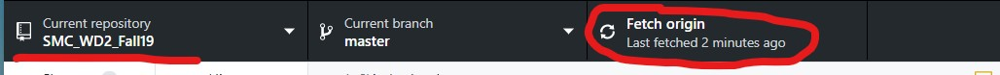
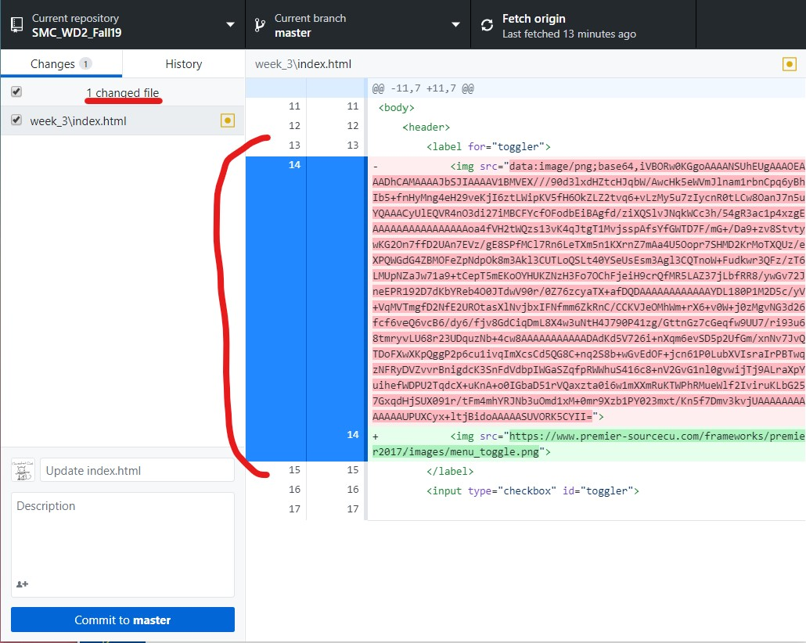
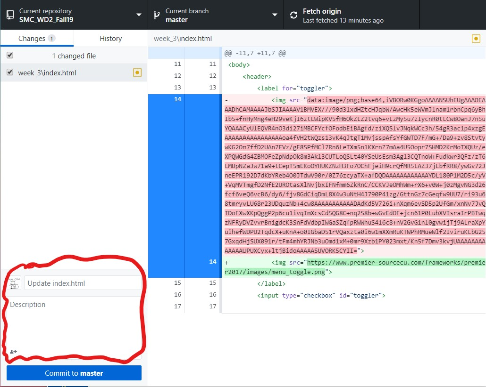
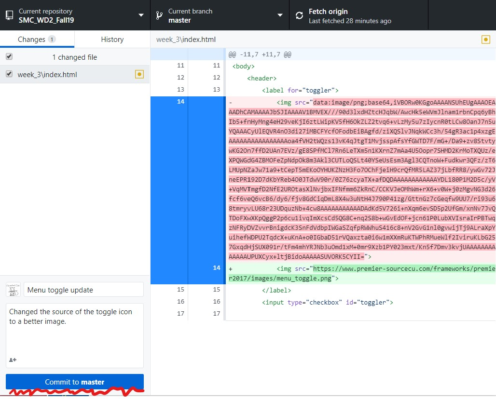
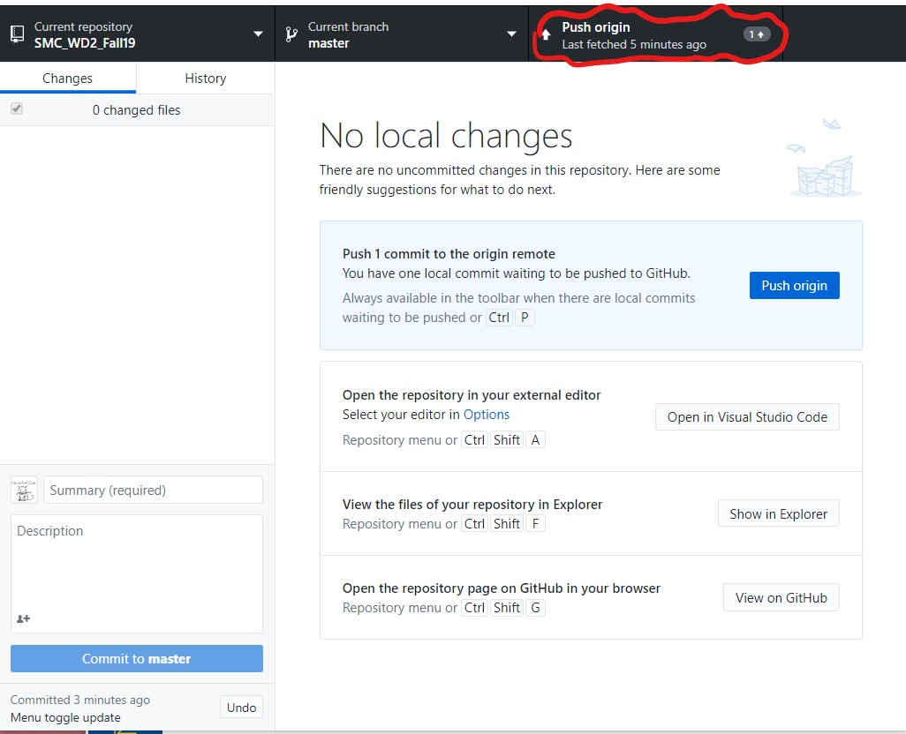
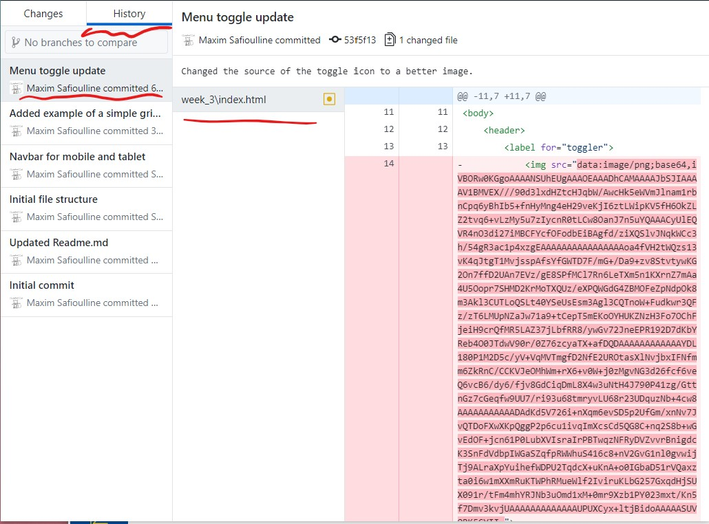
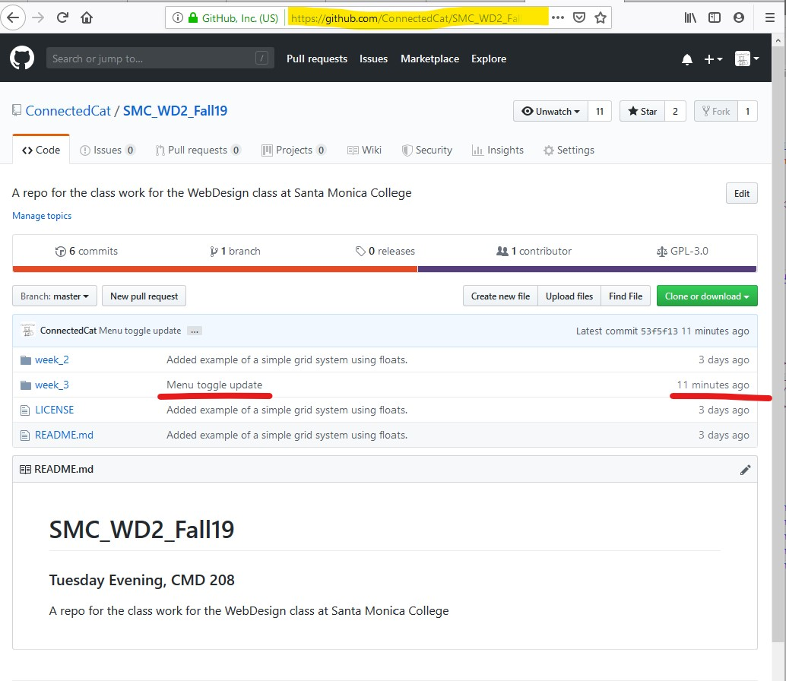

In this class we'll be using GitHub service to keep track of your progress over the course of the semester and to keep all your files safely backed up. This would be the outline of the process:

This is a step-by-step guide describing a typical workflow you'll use for your in-class and home work. It assumesm you've already gone through the set-up process outlined here.
Start by opening GitHub Desktop app and after making sure the right repository is selected click on the "Fetch origin" option. You'll find both current repo name and the "Fetch origin" on the top of the app window.
Now you can start working on your code. Open the file that you want to work on in your text editor and start making changes. Don't get carried away - once you've finished working on one part of your designs (i.e navbar, page content, images etc.) you will want to commit the changes.
To commit the changes mean to put a marker in your progress. It will allow you to return to whatever is the state that your page/site is in at this point. You might want to do this rollback if you mess something up later, but instead of scraping everything and starting from scratch you can save the parts of your work that are in good standing.
Start by returning to the GitHub Desktop app and verifying the changes:
Make sure all the changes you want to make are there. All the stuff you added is highlighted in green on the right side, all the stuff you deleted is highlighted in red. Next, write a title and a description of your changes - make sure it can be easily understood by other people who might also try to work on the same page/site.
Once the commit message is ready click "Commit to master" Master is the name of the main branch in your repository. Repositories can have many branches, with different versions of code living there simultaneously, but we are only going to be working with master.
If you now switch to the History tab you should see your most recent commit on top of other commits in this repo.
You might want to now go back to your code in a text editor and continue working on other parts of your designs. Or you might want to send the changes you have just committed up to the origin on GitHub.com. This will back up your work and will allow you to share it with others. If you are ready to do that return to the section where you previously "Fetched origin." Now you will see an option there to push to origin and a number of commits that have not been pushed up yet. Click "Push origin"
After you click it you will see a progress indicator, and at the end of it the repo will again be fetched and refreshed.
Done. You can now verify that the changes are visible on GitHub.com
